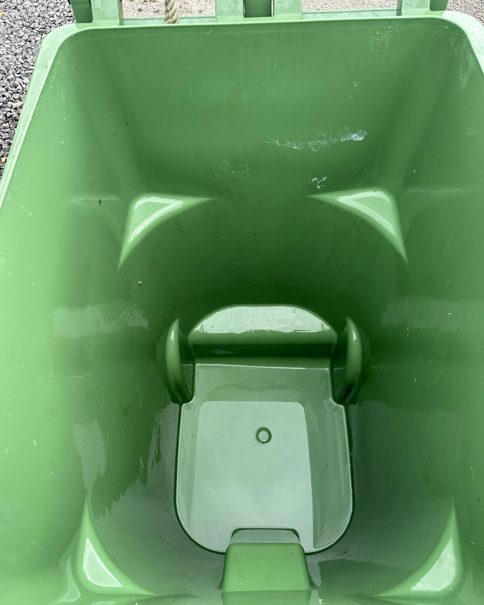
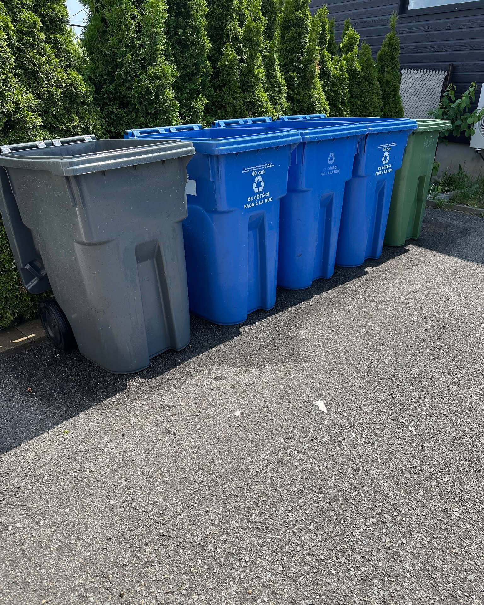
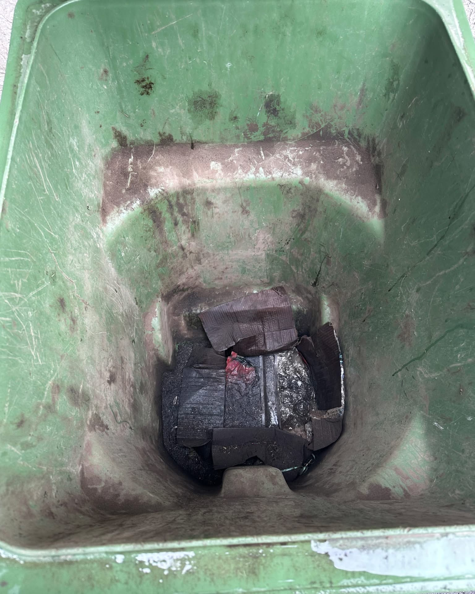
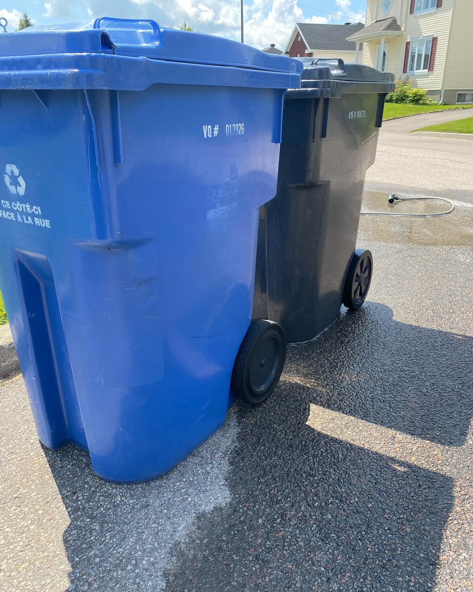
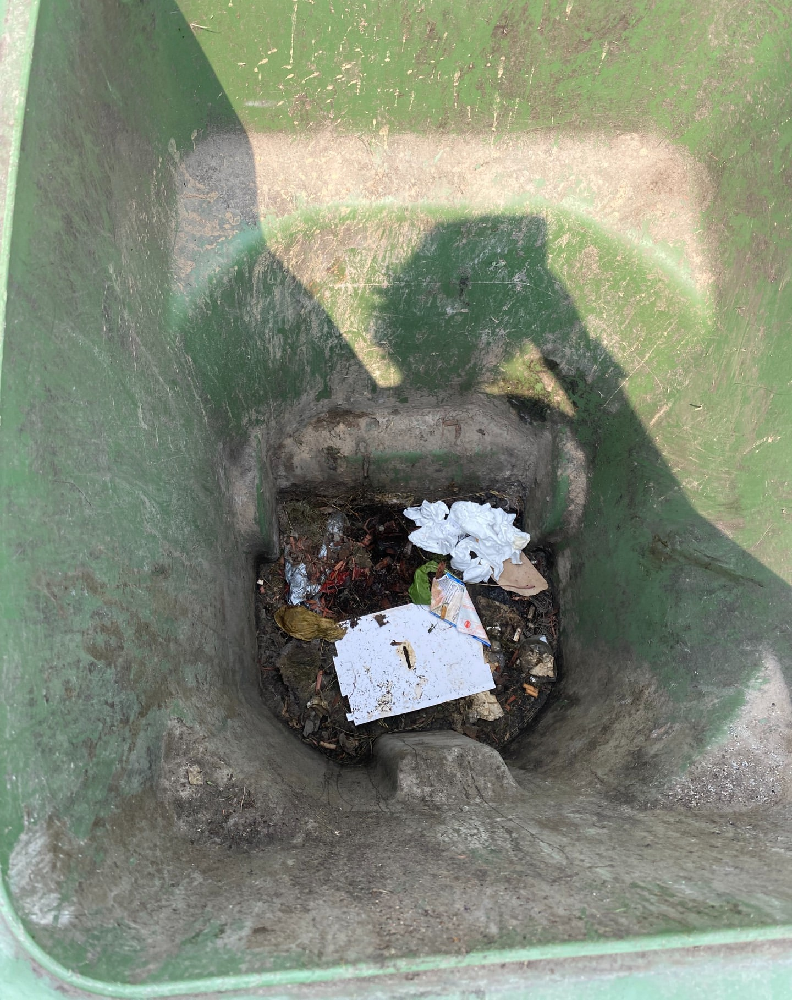
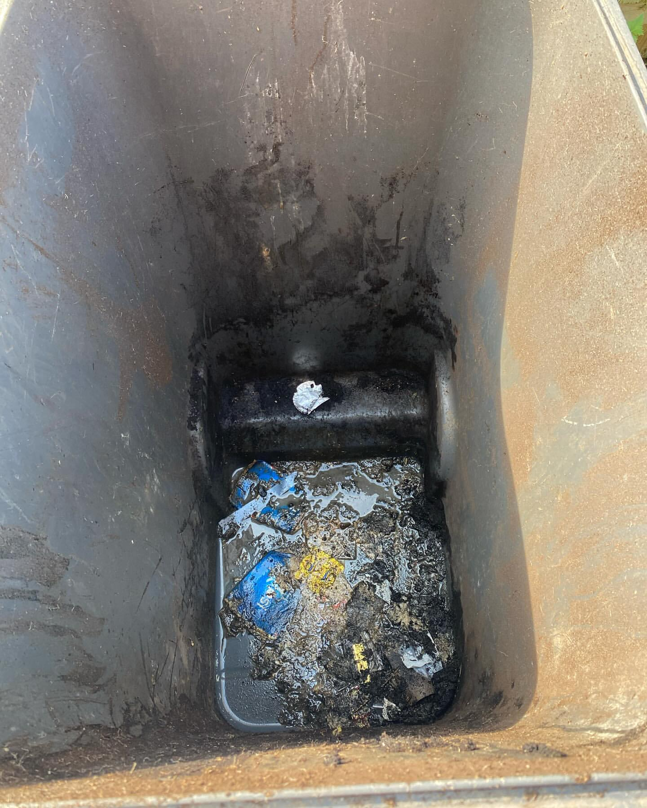

01
Nettoyage de bacs
Bacs à ordures, recyclage et compost lavés sous pression à l'intérieur comme à l'extérieur, jusqu'au fond.
à partir de 25 $ / bacService mobile · Québec et environs
BacLave nettoie et désinfecte vos bacs à ordures, recyclage et compost — odeurs et bactéries éliminées — et redonne vie à vos revêtements au lavage à pression. On se déplace chez vous, à Québec et dans les environs. À partir de 25 $ par bac.

Nettoyé & désinfecté · QuébecL'entreprise
BacLave est un service local de nettoyage de bacs et de lavage à pression, fondé à Québec pour une raison simple : personne n'aime les bacs qui puent et les revêtements ternis par les saisons. On règle les deux.
Chaque bac est vidé, lavé sous pression, désinfecté et désodorisé — les odeurs, la moisissure et les bactéries disparaissent, pas juste la saleté de surface. Pour la maison, on redonne de l'éclat aux revêtements, entrées, patios et gouttières. Et comme on est mobile, tout se fait chez vous, sans que vous ayez à bouger quoi que ce soit.
Services
Nettoyage de bacs, lavage à pression et entretien extérieur — tout ce qu'il faut pour une propriété propre et saine. Les tarifs ci-dessous sont indicatifs et confirmés au moment de la soumission gratuite.
Bacs à ordures, recyclage et compost lavés sous pression à l'intérieur comme à l'extérieur, jusqu'au fond.
à partir de 25 $ / bacTraitement qui élimine les bactéries et les germes accumulés au fil des collectes — pas juste la saleté visible.
inclus au nettoyageLes odeurs tenaces sont neutralisées, pas masquées. Votre bac ressort frais et sans relents.
inclus au nettoyageOn enlève la crasse, la moisissure verte et les traces de saison sur le revêtement de la maison.
soumission gratuiteBéton, pavé-uni, galerie et patio : le lavage à pression retire la saleté incrustée et redonne de l'éclat.
soumission gratuiteOn dégage les feuilles et débris et on nettoie l'extérieur des gouttières pour un rendu impeccable.
soumission gratuiteBacs + revêtement + entrée + gouttières en une seule visite. La formule la plus populaire au printemps.
forfait sur mesureOn apporte l'eau et l'équipement. Vous n'avez rien à préparer — on vient à vous, à Québec et environs.
sans frais de déplacement**Selon la zone. Tarifs indicatifs — confirmés lors de la soumission gratuite selon le nombre de bacs, la surface à laver et l'état. Aucun engagement avant votre accord.
Estimateur
Deux choix rapides — combien de bacs, et si tu ajoutes du lavage à pression. Tu obtiens une fourchette immédiate, puis tu envoies ta demande par courriel avec ton choix déjà rempli. Aucun engagement.
Choisis-en autant que tu veux — ou aucun. Ces montants sont estimés et confirmés à la visite.
Votre estimation
À partir de 0 $
Tarifs indicatifs — confirmés lors de la soumission gratuite selon le nombre de bacs, la surface et l'état. Aucune surprise.
Galerie
Quelques bacs et revêtements passés entre les mains de BacLave. Photos issues de la page Instagram officielle @_baclave.





Avant / Après
Glissez la poignée pour voir un même bac vert — avant, encrassé et malodorant; après, nettoyé, désinfecté et désodorisé.
Témoignages
Quelques mots reçus de propriétaires qui ont confié leurs bacs et leur maison à BacLave.
« Nos bacs sentaient tellement mauvais l'été. Après le passage de BacLave, plus aucune odeur et ils avaient l'air neufs. On répète chaque saison. »
« Le revêtement de la maison avait viré au verdâtre. Le lavage à pression a tout enlevé, on dirait qu'elle a rajeuni de dix ans. Service impeccable. »
« Ponctuel, professionnel et il ne reste aucune trace. Bacs désinfectés et entrée lavée dans la même visite — exactement ce qu'on cherchait. »
Questions fréquentes
Les questions qu'on reçoit le plus souvent — réponses claires, sans détour.
Oui. On lave sous pression l'intérieur et l'extérieur, puis on désinfecte et on désodorise. Les bactéries et les odeurs sont éliminées — pas simplement masquées. Ton bac ressort frais.
Le nettoyage de bacs commence à 25 $ par bac, avec un tarif dégressif pour plusieurs bacs. Le lavage à pression du revêtement, de l'entrée ou des gouttières se fait sur soumission gratuite, selon la surface. Utilise l'estimateur plus haut pour une fourchette immédiate.
Pas nécessairement. Pour le nettoyage de bacs, il suffit qu'ils soient accessibles. Pour le lavage à pression, on convient d'un moment ensemble. On apporte l'eau et l'équipement — tu n'as rien à préparer.
Québec et les environs immédiats. Écris-nous ton secteur au moment de la soumission et on te confirme si on se rend chez toi.
Non. On ajuste la pression et la technique selon la surface (vinyle, brique, béton, pavé-uni). L'objectif est un résultat propre, durable et sécuritaire — pas de dégâts.
Le plus simple : un courriel à baclaveqc@gmail.com ou un message direct sur Instagram @_baclave. On répond rapidement avec une soumission gratuite.
Demander une soumission
Un revêtement propre, une maison qui respire. La façon la plus simple de commencer : un courriel ou un message Instagram. On revient vers toi avec une soumission gratuite, sans engagement.
Service mobile à domicile · à partir de 25 $/bac · désinfection incluse.